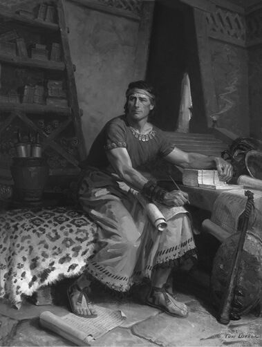

How quickly can changing circumstances affect people’s faith? (5:1–3) “Changing circumstances can . . . affect nearly a whole people’s faith. . . . ‘There was not a living soul among . . . the Nephites who did doubt in the least the words of all the holy prophets’ (3 Nephi 5:1). . . .
“Now . . . ‘There began to be great doubtings and disputations among the people, notwithstanding so many signs had been given’ (3 Nephi 8:4).
“As I check the years of these two verses, I note that this decline happened in the space of a mere ten years or less! Circumstances changed from one in which ‘not a living soul’ doubted the prophecies to a time in which there were ‘great doubtings.’ It isn’t very confidence inspiring, is it?” (Maxwell, We Talk of Christ, 64).
“For the next thirty years, Nephite civilization proceeded according to their long-established pattern—moments of righteousness and consequent prosperity followed by transgression and alienation. But the transcendent moments were transcendent indeed. At one point “there was not a living soul among all the people of the Nephites who did doubt in the least the words of all the holy prophets who had spoken; for they knew that it must needs be that they must be fulfilled.
“‘And they knew that it must be expedient that Christ had come, because of the many signs which had been given, according to the words of the prophets. . . .
“‘Therefore they did forsake all their sins, and their abominations, and their whoredoms, and did serve God with all diligence day and night.’
“That kind of faithfulness brought prosperity so great that ‘nothing in all the land [could] hinder the people from prospering continually, except they should fall into transgression.’ But fall into transgression they did, as a result of those two challenges that were forever the destruction of Nephite righteousness—pride and riches” (Holland, Christ and the New Covenant, 253–54).
How effective was the Nephite treatment of the Gadianton criminals? (5:4–6) “The Nephite approach to the captured Gadianton members was remarkable in light of many trends in our present society. Modern societies expend millions of dollars trying to psychoanalyze and rehabilitate criminals. Notice the twofold approach of the Nephites, who understood the Gadianton conspiracy posed a real threat to both the government and the Church. The Nephites preached the gospel to the robbers to see if they would be converted. If converted, the Gadiantons were freed—a remarkable bit of jurisprudence in and of itself! If the Gadiantons refused to repent, they ‘were condemned and punished according to the law’” (Book of Mormon Student Manual [1996], 113).
What does Mormon explain about his record? (5:8–10) “When Mormon abridged these records, he noted that he could not write a ‘hundredth part’ of their proceedings (Words of Mormon 1:5). Thus, historical aspects of the book assume secondary significance. . . .
“This explanation was repeated five more times (see Jacob 3:13; Helaman 3:14; 3 Nephi 5:8; 26:6; Ether 15:33). Jacob, who received the plates from his brother Nephi, provided additional insight, noting that he ‘should not touch, save it were lightly, concerning the history of this people,’ but that he was to touch upon sacred or great things ‘as much as it were possible, for Christ’s sake, and for the sake of our people’ (Jacob 1:2, 4)” (Nelson, “Testimony of the Book of Mormon,” 69, note 7).
How does being a disciple influence our service? (5:13) “We are engaged in the work of the Lord Jesus Christ. We, like those of olden times, have answered His call. We are on His errand. We shall succeed in the solemn charge given by Mormon to declare the Lord’s word among His people. He wrote: [see 3 Ne 5:13]. May we ever remember the truth, ‘Who honors God, God honors’” (Monson, “Who Honors God, God Honors,” 50).
Why did Mormon introduce himself as the editor? (5:16–18) “A careful analysis of Mormon’s statements suggests that both his discussion of records and his self-introduction in 3 Nephi 5 can be seen as part of the same narrative goal—to legitimize both the record and the record keepers of the Book of Mormon . . . Mormon likewise certified his own record as being ‘just and true’ (3 Nephi 5:18) . . . and that his record of his own day was “of the things which I have seen with mine own eyes” (v. 17). This language was clearly intended to establish Mormon as a credible abridger and as a primary witness, perhaps analogous to the Eight Witnesses to the Book of Mormon who saw and hefted the plates for themselves” (Book of Mormon Central, “Why Did Mormon Introduce Himself in 3 Nephi 5?”).
Mormon Abridges the Plates
By Tom Lovell © Intellectual Reserve, Inc. Used by permission.
What did Mormon’s appreciation for a righteous ancestor do for him? (5:20) Do you have a righteous ancestor whose life has inspired you? Which ancestor led your family to the Church? Which one has influenced your relationship with the Lord?
Why does the Book of Mormon often refer to the “four quarters of the earth”? (5:24) “Book of Mormon writers commonly spoke of their land as being divided into four quarters. . . . Accordingly they described each area of their lands by reference to the cardinal directions, such as ‘the land northward’ and ‘the land southward.’ Recent research . . . shows that similar ideas existed in pre-Columbian America and the Old World” (Wirth, “Four Quarters,” 145).
“Good evidence exists that ancient Americans divided their territorial lands into four quadrants for administrative purposes. For example, the Inca had four governors, each presiding over a quarter of the state: ‘This makes a striking parallel to the administration in other high cultures in the Old World where the kingdom was divided into four provinces linked with the cardinal points.’
“In an effort to keep the traditions of their fathers alive, the Nahua and Maya nations established four rulers, four governors, or four chiefs, each responsible for one quadrant of land. ‘In Mexico we find that the four executive officers were the chiefs or representatives of the four quarters of the City of Mexico. . . . The entire dominion of Mexico was also divided into four equal quarters, the rule administration of which was attended to by four lords. . . . The Spaniards also found in Cuzco [Peru] a large, beautifully-polished stone-cross which evidently symbolized, as in Mexico, the four quarters.’
“In Guatemala, records speak of ‘four nations, four provinces, four capitals, [and] four Tullans.’ Mesoamerican accounts of their ancestry told that they descended from seven tribes (as in Jacob 1:13) who came from across the sea, but only four were considered fundamental.
“Additionally, these records likewise envisioned the world and the heavens divided into quadrants. The Mayan Lord of Totonicapan speaks of ‘the four parts of the world.’ Mesoamerican art commonly portrays four godlike creatures (bacabs and/or chacs) holding up the four corners of the earth and sky. Likewise, Ixtlilxochitl, Obras Historicas I, and Sahagun, as Bruce Warren reports, refer to the seas surrounding central Mexico as the Seas South (SW near Oaxaca), the Sea North (NE by Tampico), the Sea East (SE near Tabasco), and the Sea West (NW around Puerto Vallarta).
“Similar references from the Old World can be cited. Cities such as Ebla and Jerusalem were divided into quarters, and the ancient Egyptian determinative glyph for ‘city’ was a circle divided diagonally into four quarters” (Wirth, “Four Quarters,” 145–46).
What role does Mormon’s record play in gathering Israel? (5:26) President Russell M. Nelson taught: “The Book of Mormon is central to this work. It declares the doctrine of the gathering. It causes people to learn about Jesus Christ, to believe His gospel, and to join His Church. In fact, if there were no Book of Mormon, the promised gathering of Israel would not occur” (“Gathering of Scattered Israel,” 80).
“The Book of Mormon is the book ordained in the councils of heaven by which to gather Israel from the ‘four quarters of the earth.’ The great message and testimony of the Book of Mormon is that all who believe on Christ as the Son of God and keep his commandments shall have eternal life. That being the message and the book being the messenger, then it ought to be clear that the gathering is, and must always be, first to Christ, and that no assembling of any peoples in any lands is of any lasting moment unless they have first embraced the doctrine and testimony of Christ as taught in the Book of Mormon. The testimony of these verses is that the tribe of Joseph, which along with all the tribes of Jacob has been scattered among all people throughout the earth, will in the last days be restored to that covenant relationship known to their ancient fathers. That is, they shall come to ‘know their Redeemer, who is Jesus Christ, the Son of God’” (McConkie et al., Doctrinal Commentary, 4:25).
